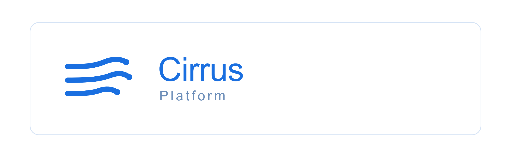

Cirrus Platform
Enterprise Internal Developer Platform (IDP)
A Cirrus Platform é uma Plataforma Interna de Desenvolvimento (Internal Developer Platform) projetada para padronizar o ciclo de entrega de software, abstrair a complexidade de infraestrutura em nuvem e acelerar a produtividade de equipes de engenharia em ambientes cloud-native.
Visão Geral e Objetivos
- Redução de Carga Cognitiva: Abstração de configurações complexas de Kubernetes e Terraform para os desenvolvedores.
- Auto-Serviço de Infraestrutura: Provisionamento padronizado de recursos através de interfaces unificadas.
- Governança e Conformidade: Garantia de aplicação das melhores práticas de arquitetura, segurança e conformidade desde a concepção do serviço.
- Padronização de Entrega: Automação do ciclo de build, validação e implantação.
Componentes da Plataforma
A arquitetura da Cirrus Platform é dividida em três pilares principais:
- Cirrus CLI (
cli/): Interface de linha de comando desenvolvida em TypeScript / Node.js responsável por abstrair interações com a infraestrutura e padronizar o fluxo de trabalho do desenvolvedor. - Core API / Orchestrator (
payment-api/): Microserviço desenvolvido em Go (Golang) focado em alta performance, responsável pelo processamento, validação e orquestração das requisições de serviço. - Módulos de IaC & Kubernetes (
terraform/ek8s/): Declarações estruturadas em Terraform e manifestos Kubernetes para provisionamento automatizado de ambientes.
Fluxo de Execução
- O desenvolvedor solicita um recurso via Cirrus CLI.
- A CLI encaminha a definição declarativa para o Core API.
- O Core API valida os parâmetros de governança e aciona o provisionamento via Terraform e Kubernetes.
Guia de Início Rápido
Pré-requisitos
- Node.js 20+
- Go 1.22+
- Terraform 1.6+
Instalação
1. Clonar o repositório
```bash git clone https://github.com/JoaoCCiriaco/cirrus-platform.git cd cirrus-platform